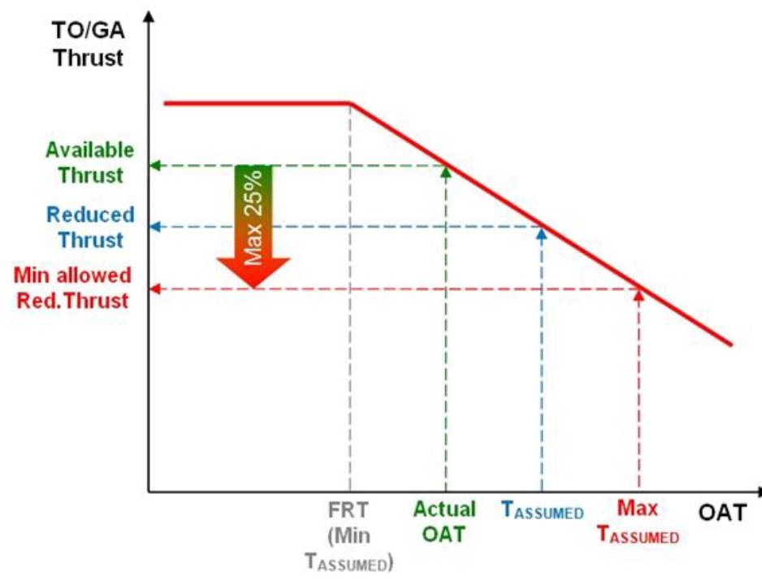
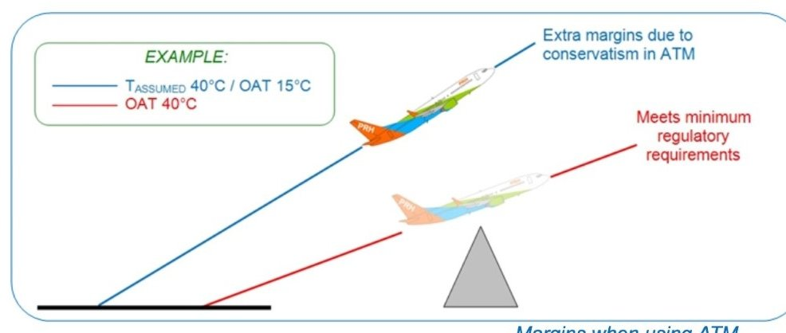

Lesson 06: Reduced and Derated Take-off Thrust
Learning objectives
- Explain flat rating and EGT margin on the CFM56-7B.
- Compare derated thrust and the assumed temperature method.
- List the restrictions on reduced thrust and its effect on the take-off speeds.
Flat-rated engine
The CFM56-7B gives constant take-off thrust up to the flat-rating temperature (FRT, corner point; about ISA + 15 °C). Below it the engine is pressure-limited and N1 and EGT rise with OAT; above it the engine is temperature-limited: EGT stays at the limit and thrust falls.

EGT margin and engine life
Engine deterioration lowers the EGT margin; when the OAT limit falls below the FRT, a full-thrust take-off can exceed the red line. Engines cause about two thirds of aircraft performance deterioration. CFM figures: a 10 °C loss of EGT margin is about 3,000 cycles and costs about 0.7 % fuel; 1 % N1 ≈ 10 °C EGT; 1 °C of assumed temperature ≈ 3.5 °C EGT. Pilot tools: reduce take-off thrust whenever possible, and allow at least 3 minutes of cooling at or near idle after landing (taxi included).
Derated thrust (fixed)
A derate is a lower certified rating with its own AFM data — as if the aircraft had smaller engines. The derated value is a limit: VMCG and VMCA are computed at the derated thrust, so they are lower. Advantages: higher V1(MCG) limit weight, allowed on contaminated runways and with anti-skid inoperative, better trimmed, may improve loadability. Danger: advancing the levers beyond the derate after an engine failure at low speed can cause loss of directional control.
Assumed temperature method (ATM)
The crew enters a temperature higher than the OAT; the engine produces the thrust for that temperature. The thrust setting is not a limit: full thrust for the actual OAT may be selected at any time (AMC 25-13), because VMCG and VMCA are based on full thrust at the actual OAT. The maximum reduction is 25 % of the rated thrust; the assumed temperature cannot be below the FRT; and it is limited by the actual weight reaching the performance-limited weight.

Built-in margins of ATM
At the actual (lower) temperature the air is denser: the true airspeed is lower for the same IAS and the thrust is higher than computed. The aeroplane therefore uses less runway and climbs better than assumed. These margins exist only when the assumed temperature is above the FRT and above the OAT, they do not exist with a derate, and they must never be used for weight planning.

Restrictions and effects
- No ATM on contaminated runways; on wet runways only with suitable data; not when items increase workload (inoperative engine instruments, reversers or anti-skid, engine intermix, non-standard procedures) — AMC 25-13.
- Double derate: ATM applied to a derate, at most 25 % below the derated thrust.
- Reduced thrust needs a higher V1 (re-balancing) and a lower V2; the trim is set for full thrust, so expect a nose-up trim after take-off.
- The application of reduced thrust is always at the commander's discretion; company restrictions apply.
The performance tool combines flap settings and improved climb to find the highest assumed temperature — this does not reduce the margins: a higher assumed temperature gives more TAS and thrust margin.
Key takeaways
- CFM56 flat rated to about ISA + 15 °C; reduce thrust whenever possible to protect EGT margin.
- Derate = a new limit (lower VMC); ATM = not a limit, full thrust always available.
- ATM: maximum 25 % reduction, not below the FRT, never on contaminated runways.
- ATM margins come from lower TAS and higher actual thrust — never plan with them.
Knowledge check
With the assumed temperature method, may the crew advance the thrust levers to full thrust after an engine failure?
- No — the reduced thrust is a limit
- Yes — reduced thrust is not a limit
- Only above V2
- Only with a derate
Answer: B. AMC 25-13: with reduced (ATM) thrust, full take-off thrust may be selected at any time; VMCG/VMCA were computed with full thrust.